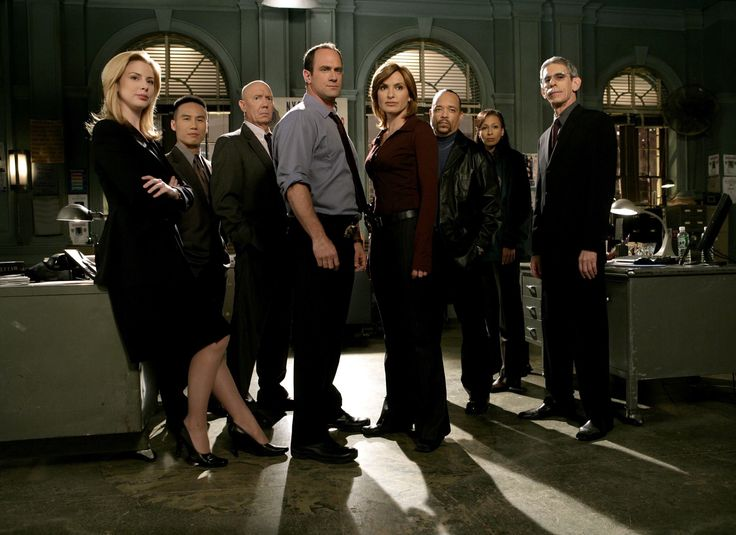

Sobre a série
Law & Order: SVU estreou em 1999 e, desde então, se consolidou como uma das séries policiais mais importantes, duradouras e reconhecidas da televisão. Ao longo dos anos, a produção conquistou milhões de fãs ao combinar investigação, drama, emoção e discussões sobre temas delicados e socialmente relevantes.
Atualmente, a série alcançou a marca de 27 temporadas, um feito impressionante que mostra sua força e permanência na cultura pop. Além disso, já ultrapassou a marca de centenas de episódios, o que reforça ainda mais a grandiosidade de sua trajetória e o impacto que construiu ao longo de mais de duas décadas.
Um marco histórico da televisão
Chegar a 27 temporadas é algo que poucas produções conseguem. Esse marco representa não apenas a longevidade da série, mas também sua capacidade de continuar relevante com o passar do tempo. Law & Order: SVU se tornou referência dentro do gênero policial por apresentar histórias intensas, personagens memoráveis e episódios que marcaram o público.
Outro dado impressionante é a quantidade de episódios já lançados: até o momento, a série soma 589 episódios exibidos. Esse número evidencia o tamanho do sucesso da produção e mostra por que ela é considerada um verdadeiro fenômeno da televisão.
O destaque de Olivia Benson
Entre todos os personagens da série, Olivia Benson ocupa um lugar especial. Desde o início, ela se destacou por sua coragem, empatia, inteligência e compromisso com a justiça. Ao longo da narrativa, Benson deixou de ser apenas uma detetive talentosa para se tornar o grande coração da SVU.
Sua forma de lidar com as vítimas, sua humanidade diante dos casos mais difíceis e sua força emocional fizeram dela uma personagem admirada por muitas pessoas. Olivia Benson representa liderança, sensibilidade e resistência, características que explicam por que ela se tornou uma das figuras femininas mais fortes da televisão.
Por que escolhi esse tema?
Escolhi esse tema porque Law & Order: SVU é uma série marcante e Olivia Benson é uma personagem inspiradora. Sua história dentro da série é construída com muita profundidade, mostrando não apenas sua competência profissional, mas também sua força diante de experiências dolorosas e desafios pessoais.
Por isso, falar sobre a série com foco em Olivia Benson é uma forma de destacar uma personagem que simboliza superação, firmeza e empatia, além de mostrar a importância de SVU dentro da televisão.
Destaque da página

Law & Order: SVU marcou gerações e continua sendo lembrada como uma série intensa, relevante e histórica. Grande parte desse sucesso está ligada à presença de Olivia Benson, que se tornou símbolo de força, humanidade e perseverança.
Link externo
Para conhecer mais sobre a franquia, acesse o site oficial: Site oficial de Law & Order: SVU